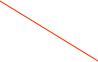

FLTv4


This is a 24 channel digitizing board designed and constructed by the IPE group at KIT. The board was designed to be flexible enough to be used in several very different applications,one of which is the KATRIN experiment.
See the manual and register map for more specific information. More detailed information about the v4 cards is published by the IPE group and is available here (opens new window).
There is a version of firmware which supports a multiplicity trigger -- more info here (opens new window).

Choose run mode. The three modes are Energy, Energy+Trace, Histogram
Trapezoidal filter setup
Write all values to the hardware
Helpful Hint.
Use Cmd-Shift-> and Cmd-Shift-< to make this dialog control a shaper card in a slot to the right or left of the currently selected card.
Use Cmd-C to bring up another card dialog, set one of them to the Rates display and one to the Settings display to see rates while setting thresholds.
Individual channel parameters. Set gains and trigger thresholds
Rate over time.
Total hit rate for card
Channel-by-channel rates. Note that you can enable/disable channels here also
Data Record Formats
Energy record:
xxxx xxxx xxxx xxxx xxxx xxxx xxxx xxxx
^^^^ ^^^^ ^^^^ ^^-----------------------data id
^^ ^^^^ ^^^^ ^^^^ ^^^^-length in longs
xxxx xxxx xxxx xxxx xxxx xxxx xxxx xxxx
^^^^ ^^^--------------------------------spare
^ ^^^---------------------------crate
^ ^^^^---------------------card
^^^^ ^^^^ ----------channel
xxxx xxxx xxxx xxxx xxxx xxxx xxxx xxxx sec
xxxx xxxx xxxx xxxx xxxx xxxx xxxx xxxx subSec
xxxx xxxx xxxx xxxx xxxx xxxx xxxx xxxx
^^^^ ^^^^ ^^^^ ^^^^ ^^^^ ^^^^ channel Map (each bit indicates hit channel)
xxxx xxxx xxxx xxxx xxxx xxxx xxxx xxxx
^^-------------------- time precision(2 bit)
^^^^ ^^------------ number of page in hardware buffer (0..63, 6 bit)
^^ ^^^^ ^^^^ eventID (0..511, 10 bit!)
xxxx xxxx xxxx xxxx xxxx xxxx xxxx xxxx energy
Waveform record:
xxxx xxxx xxxx xxxx xxxx xxxx xxxx xxxx
^^^^ ^^^^ ^^^^ ^^-----------------------data id
-----------------^^ ^^^^ ^^^^ ^^^^ ^^^^-length in longs
xxxx xxxx xxxx xxxx xxxx xxxx xxxx xxxx
^^^^ ^^^--------------------------------spare
------- ^ ^^^---------------------------crate
-------------^ ^^^^---------------------card
--------------------^^^^ ^^^^-----------channel
xxxx xxxx xxxx xxxx xxxx xxxx xxxx xxxx sec
xxxx xxxx xxxx xxxx xxxx xxxx xxxx xxxx subSec
xxxx xxxx xxxx xxxx xxxx xxxx xxxx xxxx
^^^^ ^^^^------------------------------ channel (0..22)
------------^^ ^^^^ ^^^^ ^^^^ ^^^^ ^^^^ channel Map (each bit indicates hit channel)
xxxx xxxx xxxx xxxx xxxx xxxx xxxx xxxx eventID:
-----------------^^---------------------precision
--------------------^^^^ ^^-------------number of page in hardware buffer
---------------------------^^ ^^^^ ^^^^-readPtr (0..1024)
xxxx xxxx xxxx xxxx xxxx xxxx xxxx xxxx energy
xxxx xxxx xxxx xxxx xxxx xxxx xxxx xxxx eventFlags
^^^ ^^^^ ^^^^-----------traceStart16 (starting value index, 0..2047)
^-------append flag is (append to previous record)
^------append next waveform record
^^^^-record version number
xxxx xxxx xxxx xxxx xxxx xxxx xxxx xxxx not yet defined ...
followed by waveform data (up to 2048 16-bit words)
HitRate record:
xxxx xxxx xxxx xxxx xxxx xxxx xxxx xxxx
^^^^ ^^^^ ^^^^ ^^-----------------------data id
^^ ^^^^ ^^^^ ^^^^ ^^^^-length in longs
xxxx xxxx xxxx xxxx xxxx xxxx xxxx xxxx
^^^^ ^^^--------------------------------spare
^ ^^^---------------------------crate
^ ^^^^---------------------card
xxxx xxxx xxxx xxxx xxxx xxxx xxxx xxxx sec
xxxx xxxx xxxx xxxx xxxx xxxx xxxx xxxx hitRate length
xxxx xxxx xxxx xxxx xxxx xxxx xxxx xxxx total hitRate
xxxx xxxx xxxx xxxx xxxx xxxx xxxx xxxx
^^^^ ^^^^-------------------------- channel (0..22)
^--------------------- overflow
^^^^ ^^^^ ^^^^ ^^^^- hitrate
...more follow to fill out the record
Histogram record:
xxxx xxxx xxxx xxxx xxxx xxxx xxxx xxxx
^^^^ ^^^^ ^^^^ ^^-----------------------data id
^^ ^^^^ ^^^^ ^^^^ ^^^^-length in longs
xxxx xxxx xxxx xxxx xxxx xxxx xxxx xxxx
^^^^ ^^^--------------------------------spare
------- ^ ^^^---------------------------crate
-------------^ ^^^^---------------------card
--------------------^^^^ ^^^^-----------channel
followed by histogram data (n x 1024 16-bit words)

Some tests that can be done on the card. Note that at the time of this writing not all the tests are finished.


Using this dialog you can access many of the low-level registers directly.

Set or Clear all of the checkboxes for each channel
Histogram mode setup.

Run an algorithm to set the thresholds of enabled channels to the noise floor

You must be in a run to use the threshold finder.